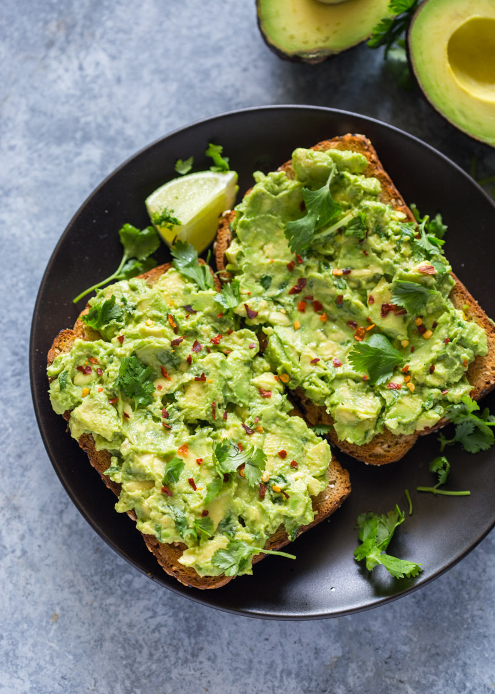

-These Strawberry Yoghurts will be your Jam-
-Ingredients-
1/2 pot of natural greek yoghurt (low fat)
15 ripe strawberries
1 box of raisins
-Method-
wash the strawberries and cut the middle out of each one
put the inside and the natural yoghurt in a blender
pour the smoothie mixture into the carved strawberries
put raisins on top
Love, Beet

-This toast will be Everything you Avo wanted-
-Ingredients-
1 ripe avocado
lemon juice
chilli flakes
pepper
rocket
2 slices of sourdough bread
1 egg
-Method-
toast the slices of bread
Remove the avocado from the skin and place the avocado flesh into a medium bowl and mash
it with a fork
boil the egg for 10 minutes
spread the avacado flesh onto the toast
slice the boiled egg and put it on top of the toast
sprinke with rocket, chilli flakes and pepper
Love, Turnip
And Beet